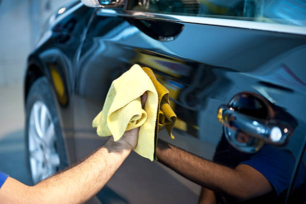
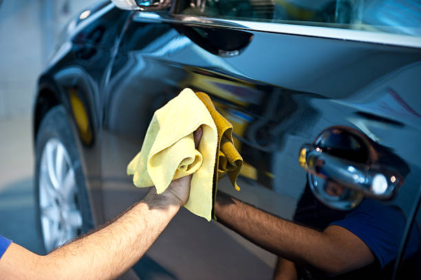

MES ASPIRATIONS

Data enthousiaste, je mets mes compétences en statistiques, programmation et visualisation au service de projets innovants. Avec expertise en Python, SQL et Outils BI, je transforme des données brutes en insight stratégiques. Mon But Ultime:Exploiter les potentiels DATA afin d'optimiser les processus décisionnels.
Professionnelle spécialisée dans l'analyse de Data à l'international. Solide expérience en gestion de projet multidisciplinaires et en collaboratoin en environnement multiculturel.
 
